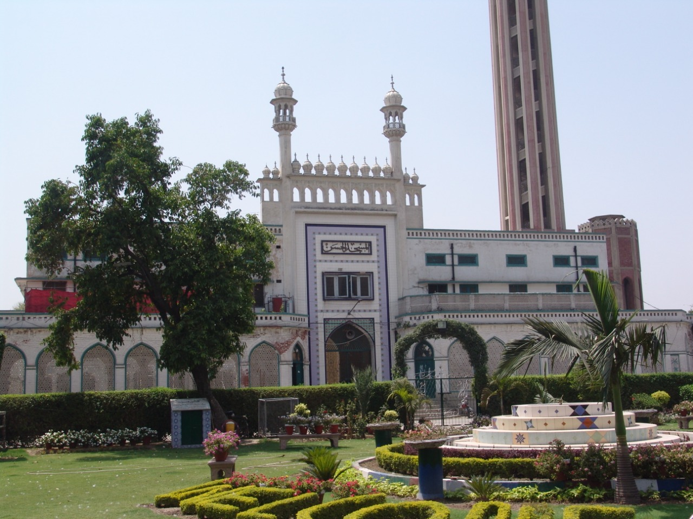

Advanced Islamic Education - Dars-e-Nizami (Aalim Course) - Specialization in Fiqh (Iftaa) - Specializations in Tafseer, Hadith, and Arabic Literature 2. Blend of Religious & Modern Education - Some departments also include basic contemporary education. 3. Quranic Education - Hifz-ul-Quran (Memorization) - Nazirah (Reading) - Tajweed and Qira’at (Correct pronunciation) 4. Free Education & Accommodation - Students are provided free food, housing, and books. 5. Spiritual and Moral Environment - Emphasis on character building, spiritual training, and discipline. 6. Separate Branch for Females - There is a separate department for women with full observance of Islamic veil. 7. Recognized Certification - Graduates receive certified degrees recognized by Islamic institutions worldwide. Departments / Classes Offered: - Hifz-ul-Quran (Quran Memorization)
